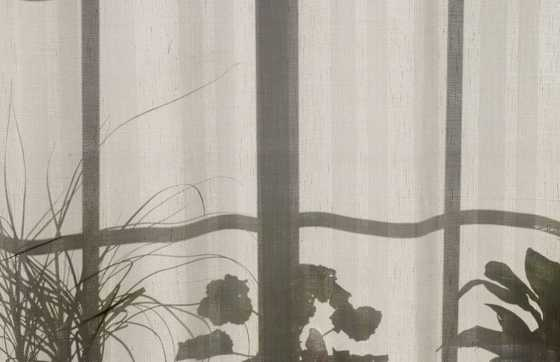
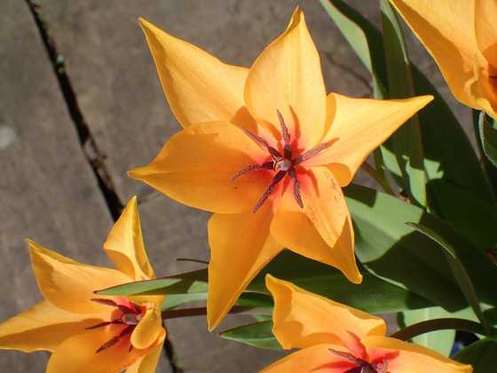
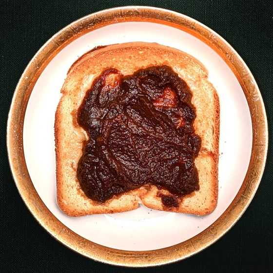
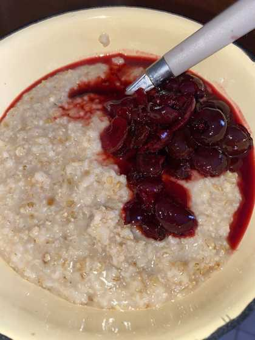
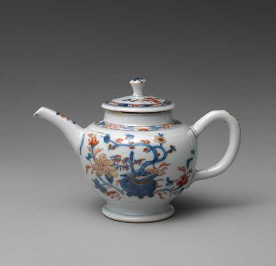

モーニング
パン、野菜サラダ、小鉢、ゆで卵などがそろう朝のセット。ドリンクを選ぶスタイルだと紹介されています。ボリュームのあるスペシャルセットもあるようです。
価格: 準備中
掲載写真はフリー素材のイメージで、店舗の実際の様子ではありません。日本国内の他地域で撮影されたものや、撮影地が不明なものを含みます。
岐阜県関市 春里町
「憩いのカフェ」を掲げる、関市の小さなカフェ。パンと小鉢の朝ごはんで、一日のはじまりをやさしく迎えます。
※このコンセプト文は制作側の案です。

ハレルヤは、岐阜県関市の「おうちカフェ」。以前は同じ関市の大平町で営業しており、2023年春に春里町へ移って新しく店を開きました。
隠れ家のような、おうちの居間のような心地よさはそのままに、ナチュラルで明るく、迎え入れてくれる雰囲気になったと紹介されています。1階にカウンター席とテーブル席、2階には個室があり、全席禁煙、駐車場もあるとのことです。
Instagramでは「憩いのカフェ」と名乗っています。店名の由来やオーナーの想いについては確認できていないため、このページでは触れていません。

価格・営業時間などの詳細は準備中です。以下は、第三者の紹介記事などで伝えられている内容で、変更されている場合があります。




営業時間: 準備中 / 定休日: 準備中 / 電話: 準備中


パンのある朝を、ゆっくりと。
以下は制作側が作成したイメージ例で、実際のお客様の声ではありません。
イメージ例朝ごはんのパンと小鉢がうれしくて、ゆっくり過ごせました。おうちに招かれたような居心地です。
イメージ例席の間隔にゆとりがあり、のんびり本を読んで過ごせました。また寄りたいです。
イメージ例温かい飲み物と焼きたてのパンで、一日の気持ちが整いました。


